Learning Objectives
In earlier classes, we have learnt to construct algebraic expressions using exponential notations. For example, x square + 3 x + 2 is an algebraic expression in the variable x. This can also be written as an equation x square + 3 x equal to minus 2.
By substituting numerical values for x, we can verify this equation.
If x equal to minus 2, then L.H.S equal x square + 3 x equal to (minus 2) square + 3 multiplied by (minus 2)
Equal to 4 minus 6
Equal to minus 2 equal R.H.S
Hence, this equation is true when x equal to minus 2
If x equal to minus 1, then L.H.S equal to x square + 3 x equal to (minus 1) square + 3 multiplied by (minus 1)
Equal to 1 minus 3
Equal to minus 2 equal to R.H.S
Hence, this equation is true when x equal to minus 1
But when x equal to 1 then, L.H.S equal x square + 3 x equal to (1) square + 3 multiplied by (1)
Equal to 1 + 3
Equal to 4 not equal to R.H.S
Thus, this equation is not true when x equal to 1
Thus, x square + 3 x equal to minus 2 is an equation which is true only when x takes the values minus1 and minus2. Hence, an equation is true only for certain values of the variable in it.
It is not true for all values of the variables.
Now, consider the algebraic expression, (ye + b) square equal to ye square + 2 ye b + b square. Let us try to find the values of the expression for the given values of ye and b.
For example, When ye equal to 3 and b equal to 5
LHS equal to (ye + b) square equal to (3 + 5) square equal to 8 square equal to 8 multiplied by 8 equal to 64
RHS equal to ye square + 2 ye multiply by b + b square equal to 3 square + (2 multiplied by 3 multiplied by 5) + 5 square equal 9 + 30 + 25 equal to 64
Thus, for ye equal to 3 and b equal to 5 LHS equal to RHS
Similarly, when ye equal to 4 and b equal to 7
LHS equal to (ye + b) square equal to (4 + 7) square equal to 11 square equal to 121
RHS equal to ye square 2 + 2 ye multiplied by b + b square equal to 4 square + 2 multiplied by 4 multiplied by 7 + 7 square equal to 16 + 56 + 49 equal to 121
Also, for ye equal to 4 and b equal to 7, LHS equal to RHS
Thus, we shall find that for any value of ‘ye’ and ‘b’ LHS equal to RHS. Such an equality, which is true for every value of the variable in it is called an identity. Thus, we observe that the equation (ye + b) square equal ye square + 2 ye multiplied by b + b square is an identity.
In general, algebraic equalities which hold true for all the values of the variables are called identities. Let us see the basic identities with geometrical proof.
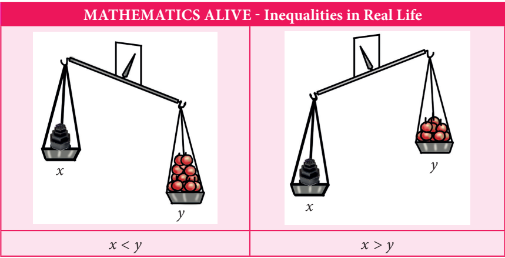
We have already learnt that the operation of multiplication can be modelled in different ways. The one that we use in this unit is the representation of multiplication as a product table that is similar to area.
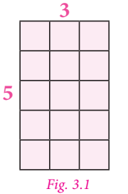
For example, the product 5 multiplied by 3 can be represented as shown in figure 3.1, which has five rows and three columns and it comparises 15 small squares. From figure 3.2, it is also clear that the product of 5 multiplied by 3 is the same as the product of 3 multiplied by 5 (since, multiplication is commutative)
Here, multiplication is represented using grid model. The same can be represented using area model.
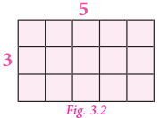
The area model hels us to understand multiplication by decomposing the area of large rectangle into areas of smaller rectangles. Also the same example which is discussed above may be decomposed as,
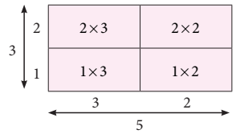
5 multiplied by 3 equal to (2 multiplied by 3) + (2 multiplied by 2) + (1 multiplied by 3) + (1 multiplied by 2)
Equal to 6 + 4 + 3 + 2
Equal to 15
This decomposition model is very useful when we are finding the product of large numbers.
Think
Is it the only way to decomposer the number representing length and breadth? Discuss.
Note
It can be practiced not to draw the area models in proportions to the numbers, since it stimulates abstract represention.
Let us try to extend this concept of multiplication for variables.
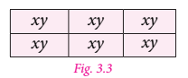
Take few tiles in rectangular shape of length 'x' and breadth 'y'. Also the area of one tile is x multiplied by y.
Arrange them as shown in figure 3.3 and try to find its area.
In figure 3.3, 6 tiles create a rectangular shape. Area of each tile is xy, hence the area of the shape is 6 multiplied by x y equal to 6 x y equation (1)
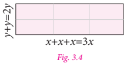
The same area can also be found out by taking the length of the rectangular shape (figure 3.4) as x + x + x equal to 3 x and breadth as y + y equal to 2 y.
Hence, its area equal 3 x multiplied by 2 y equation (2)
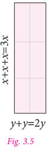
Also, the same area (6 x y) can be represented by taking the length of the rectangular shape as y + y equal to 2y and the breadth as x + x + x equal to 3 x
Then the area of the rectangular shape (figure 3.5) so obtained equal 2 y multiplied by 3 x equation (3)
Since all the areas are same, from (1), (2) and (3) we get,
6 x y equal to 3 x multiplied by 2 y equal to 2 y multiplied by 3 x
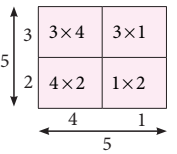
In our earlier discussion, we saw the geometrical representation of 5 multiplied by 3 (figure 3.1). here we shall replace the second number 3 with 5. We get, 5 multiplied by 5
We get the square number, 5 square equal to 25, that may be represented as,
5 square equal to (3 multiplied by 4) + (1 multiplied by 3) + (4 multiplied by 2) + (1 multiplied by 2)
Equal to 12 + 3 + 8 + 2
Equal to 25
Extending the same for variables in figure 3.5, the rectangular area is made into a square by making the length equal to breadth, that is 2y is taken as 3x which becomes the side of the square.
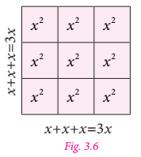
Now in figure 3.6 the sides are 3 x and area of the square is equal 3 x multiplied by 3 x equation (4)
Also, each area is x square and since there are 9 small squares the area of whole square is 9 x square equation .(5)
Since both the areas equation (4) and equation (5) are equal, we get 3 x multiplied by 3 x equal to 9 x square.
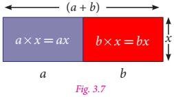
Let us find the product of x and (ye + b). Look at the following figure.
In the figure 3.7, the two rectangles are combined together to form ye new rectangle. Breadth of each of the rectangle are x and their lengths are a and b. So, the length and breadth of the new rectangle are (ye + b) and x respectively.
Thus,
Area of bigger rectangle equal to Area of rectangle 1 + Area of rectangle 2
Therefore, (ye + b) multiplied by x equal to (ye multiplied by x) + (b multiplied by x) [Distributive property]
Equal to ye x + b x
Now, we can conclude that the multiplication of two or more monomials, as given below.
1. If the variables are same in both the monomials then,
Also, 3 x square multiplied by 2 x square equal to (3 multiplied by 2) (x square multiplied by x cube) equal to 6 multiplied by x power (2 + 3) equal to 6 x power 5
2. If the variables are different in both the monomials, then multiply them by expressing it as ye product of the variables. For example, 5 x multiplied by 4 y equal to (5 multiplied by 4) multiplied by (x multiplied by y) equal to 20 x y
Note
Product of monomials is also ye monomial.
Try these
1. Observe the following figures and try to find its area, geometrically. Also verify the same by multiplication of monomial.
1)
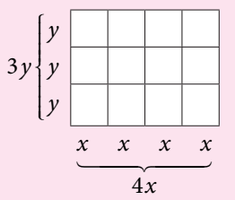
2)
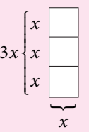
3)
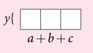
4)
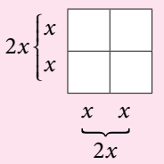
5)
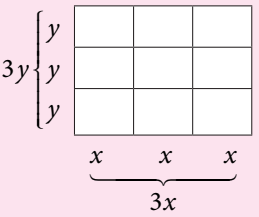
2. Let the length and breadth of ye tile be x and y respectively. Using such tiles construct as many rectangles as you can and find out the length and breadth of the rectangles so formed such that its area is
1) 12 x y
2) 8 x y
3) 9 x y
By using this concept of multiplication of monomials, let us try to prove the identities geometrically, which are very much useful in solving algebraic problems.
Consider four regions. One region is square shaped with dimension 3 multiplied by 3 (Grey). Also, the other three regions are rectangle in shape with dimensions 4 multiplied by 3 (Yellow), 3 multiplied by 2 (red) and 4 multiplied by 2 (blue).
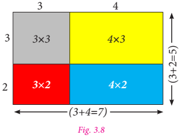
Arrange these four regions to form ye rectangular shape as shown in the figure 3.8
By observing figure 3.8, we can note that,
Area of the bigger rectangle equal to Area of ye square (Grey) + Area of Three rectangles
(3 + 4) multiplied by (3 + 2) equal to (3 multiplied by 3) + (4 multiplied by 3) + (3 multiplied by 2) + (4 multiplied by 2)
(3 + 4) multiplied by (3 + 2) equal to (3 multiplied by 3) + 3 multiplied by (4 + 2) + (4 multiplied by 2) equation .(1)
Where, LHS is equal to (3 + 4) multiplied by (3 + 2) equal to 7 multiplied by 5 equal to 35
RHS is equal to (3 multiplied by 3) + 3 multiplied by (4 + 2) + (4 multiplied by 2) equal to 9 + (3 multiplied by 6) + 8
Equal to 9 + 18 + 8 equal to 35
Therefore, LHS equal to RHS
In the similar way as explained above, let us check for another set of four regions as shown in the figure 3.9
Note
We know that,
Area of rectangle equal length multiplied by breadth
Equal to l multiplied by b
Also, area of square
Equal to side multiplied by side
Equal to ye multiplied by ye equal to ye square
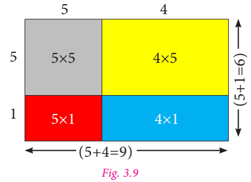
By observing figure 3.9, we can note that,
Area of the bigger rectangle equal Area of ye square (grey) + Area of three rectangles
(5 + 4) multiplied by (5 + 1) equal to (5 multiplied by 5) + (5 multiplied by 1) + (5 multiplied by 4) + (1 multiplied by 4)
(5 + 4) multiplied by (5 + 1) equal to (5 multiplied by 5) + 5 multiplied by (1 + 4) + (1 multiplied by 4) equation .(2)
Where, LHS is (5 + 1) multiplied by (5 + 4) equal to 6 multiplied by 9 equal to 54
RHS is 5 square + 5 multiplied by (1 + 4) + (1 multiplied by 4) equal to 25 + (5 multiplied by 5) + 4
Equal to 25 + 25 + 4 equal to 54
Therefore, LHS equal to RHS.
Thus, equation (1) and (2) is true for given set of any three values.
By generalising those three values as 'x', 'ye' and 'b'
We get, (x + ye) multiplied by (x + b) equal to (x multiplied by x) + x multiplied by (ye + b) + (a multiplied by b)
That is, (x + ye) multiplied by (x + b) equal to x square + x multiplied by (ye + b) + a multiplied by b
Hence, (x + ye) multiplied by (x + b) equal to x square + x multiplied by (ye + b) + a multiplied by b is an identity
Now, let us prove this identity, geometrically.
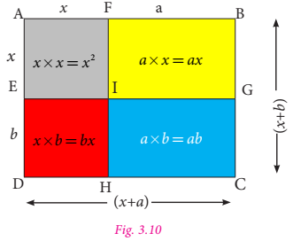
Let one side of ye rectangle be (x + ye) and the other side be (x + b) units.
Then, the total area of the rectangle ye B C D equal to length multiplied by breadth equal to (x + ye) multiplied by (x + b) equation (3)
From the figure 3.10, we can see that the
Area of the rectangle ye B C D equal to area of the square ye F I E + area of the rectangle F B G I + area of the rectangle E I H D + area of the rectangle I G C H
Equal to x square+ ye multiplied by x + b multiplied by x + ye multiplied by b
Equal x square + x multiplied by (ye + b) +a multiplied by b equation .(4)
From (3) and (4) we get, (x + ye) multiplied by (x + b) equal to x square + x multiplied by (ye + b) + ye multiplied by b
Hence, (x + ye) multiplied by (x + b) equal to x square + x multiplied by (ye + b) + ye multiplied by b is an identity.
Note
1. In case if b equal to minus b then the identity is (x + ye) multiplied by (x + (minus b)) equal to x square+ x multiplied by (ye + (minus b)) + ye multiplied by (minus b)
(x + ye) multiplied by (x minus b) equal to x square+ x multiplied by (ye minus b) minus ye multiplied by b
2) If ye equal to minus ye then the identity is (x + (minus ye)) multiplied by (x + b) equal to x square+ x ((minus ye) + b) + (minus ye) multiplied by b
(x minus ye) multiplied by (x + b) equal to x square+ x (b minus ye) minus ye b
3) If ye equal to minus ye and b equal to minus b then the identity is (x + (minus ye)) multiplied by (x + (minus b)) equal to x square + x multiplied by ((minus ye) + (minus b)) + (minus ye) multiplied by (minus b)
(x minus ye) multiplied by (x minus b) equal to x square minus x multiplied by (ye + b) + ye multiplied by b
Example 3.1
Simplify the following using the identity (x + ye) multiplied by (x + b) equal to x square+ x multiplied by (ye + b) + ye multiplied by b
1) (x + 3) multiplied by (x + 5)
2) (y + 8) multiplied by (y + 6)
3) 43 multiplied by 36
1) (x + 3) multiplied by (x + 5)
Solution
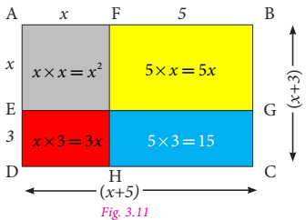
Let us represent the expression geometrically, as shown in the figure 3.11
In the rectangle with length (x + 5) and breadth (x + 3), we get,
Area of bigger rectangle equal Area of ye square + Area of three rectangles
Therefore,
(x + 3) multiplied by (x + 5) equal to x square+ 5 multiplied by x + 3 multiplied by x + 15
equal to x square + (5 + 3) multiplied by x + 15
equal to x square + 8 multiplied by x + 15
2) (y + 6) multiplied by (y + 8)
Let us represent the expression geometrically, as shown in figure 3.12.
In the rectangle with length (y + 6) and breadth (y + 8) units, we get,
Area of bigger rectangle equal to Area of square + Area of three rectangles
Therefore,
(y + 6) multiplied by (y + 8) equal to y square+ 6 multiplied by y + 8 multiplied by y + 48
(y + 6) multiplied by (y + 8) equal to y square+ (6 + 8) multiplied by y + 48
Equal to y square+ 14 multiplied by y + 48
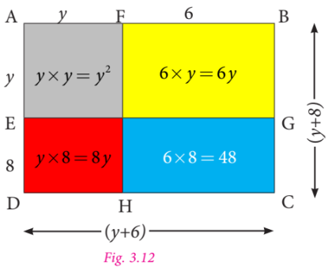
3) 43 multiplied by 36 equal to (40 + 3) multiplied by (40 minus 4)
We know the identity
(x + ye) multiplied by (x + b) equal to x square+ x multiplied by (ye + b) + ye multiplied by b
Taking, x equal to 40, ye equal to 3 and b equal to minus 4 we get
(40 + 3) multiplied by (40 minus 4) equal to 40 square+ 40 multiplied by (3 minus 4) + 3 multiplied by (minus 4)
Equal to 1600 + 40 multiplied by (minus 1) minus 12
Equal to 1600 minus 40 minus 12
Equal to 1600 minus 52
Therefore, 43 multiplied by 36 equal to 1548
Consider four regions. Two square shaped regions with the dimensions of 3 multiplied by 3 (Grey) and 2 multiplied by 2 (Blue). Also, there are two rectangle shaped regions and both are in the dimension of 3 multiplied by 2 (Yellow).
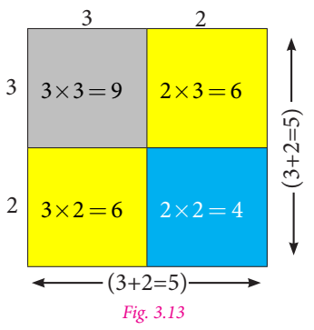
Arrange them in ye square shape as shown in the figure 3.13.
By observing the figure 3.13, we can note that
Area of the bigger square equal to Area of two small squares + Area of two rectangles.
(3 + 2) square equal to 3 square + (2 multiplied by 3) + (3 multiplied by 2) + 2 square equal to 3 square + (3 multiplied by 2) + (3 multiplied by 2) + 2 square
[Since, 2 multiplied by 3 equal to 3 multiplied by 2]
Therefore, (3 + 2) square equal to 3 square + 2 multiplied by (3 multiplied by 2) + 2 square
Where, L.H.S is (3 + 2) square equal to 5 square equal to 25 equation (1)
R.H.S is 3 square + 2 multiplied by (3 multiplied by 2) + 2 square equal to 9 + 12 + 4 equal to 25 equation (2)
From (1) and (2), L.H.S equal to R.H.S
Now, we can prove this for the variables ye and b
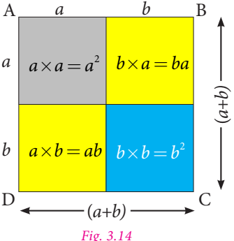
Let us take ye square ye B C D of side (ye + b), hence its area is (ye + b) multiplied by (ye + b) equal to (ye + b) square
By observing the figure 3.14,
Area of the bigger square ye B C D equal to Area of two small squares (grey and blue) + Area of two rectangles (yellow)
So, (ye + b) square equal to ye square + b multiplied by ye + ye multiplied by b + b square
Equal to ye square+ ye multiplied by b + ye multiplied by b + b square(Since, b multiplied by ye equal to ye multiplied by b)
(ye + b) square equal to ye square+ 2 multiplied by ye b + b square
Hence proved.
Note
If, we substitute b equal to ye in the identity (x + ye) multiplied by (x + b) equal to x square+ x multiplied by (ye + b) + ye multiplied by b, we get,
(x + ye) multiplied by (x + ye) equal to x square + x multiplied by (ye + ye) + ye multiplied by ye
(x + ye) square equal to x square + x multiplied by (2ye) + ye square
(x + ye) square 2 equal to x square + 2 multiplied by ye x + ye square, which is similar to the identity (ye + b) square equal to ye square + 2 multiplied by ye b + b square
Example 3.2
Simplify the following using the identity (ye + b) square equal to ye square+ 2 multiplied by ye b + b square
Solution
1) (2 x + 5) square
Let the side of the square be 2x+5 units. Then its area is side multiplied by side, that is (2 x + 5) square
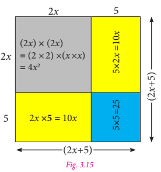
The geometrical representation of the given expression is as shown in figure 3.15.
Area of the bigger square equal to Area of two squares + Area of two rectangles.
(2 x + 5) square equal to 4 x square+ 25 + 10 multiplied by x + 10 multiplied by x
Equal to 4 x square+ (10 + 10) multiplied by x + 25 (Adding like terms)
Equal to 4 x square + 20 multiplied by x + 25
2) 21 square
Let the side of the square be 21. Hence, its area is 21 square
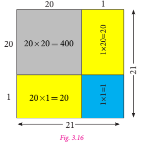
Consider 21 square as (20 + 1) square which is one of the way to represent it geometrically as shown in figure 3.16.
Now,
Area of the bigger square equal to Area of two squares + Area of two rectangles.
21 square equal to 400 + 1 + 20 + 20 equal to 441
Alter method:
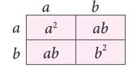
We know the identity
(ye + b) square equal to (ye + b) multiplied by (ye + b)
Equal to ye square + 2 multiplied by ye b + b square
To find the value of 21 square
We take, 21 square equal to (20 + 1) square
Equal to (20 + 1) multiplied by (20 + 1)
Here, ye equal to 20 and b equal to 1
Therefore,
ye square+ 2 multiplied by ye b + b square equal to 20 square + 2 multiplied by 20 multiplied by 1 + 1 square
Equal to 400 + 40 + 1 equal to 441
When we replace 'b' by 'minus b' in ‘identity minus 2’, we get a new identity.
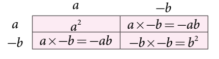
We know that, (ye + b) square equal to ye square + 2 multiplied by ye b + b square
Taking ‘b' as 'minus b' in ‘identity minus 2’, we get, [ye + (minus b)] square equal to ye square + 2 ye multiplied by (minus b) + (minus b) square
(ye minus b) square equal to ye square minus 2 multiplied by ye b + (minus b) multiplied by (minus b)
Therefore, (ye minus b) square equal to ye square minus 2 multiplied by ye b + b square
Note that, when we change the sign of b, the sign of 2 ye b (second term) alone is changed.
Example 3.3
Using the identity (ye minus b) square equal to ye square minus 2 multiplied by ye b + b square, simplify the following:
1. (3 x minus 5 y) square
2. 47 square
Solution
1. (3 x minus 5 y) square
Put ye equal to 3 x and b equal to 5 y in the identity (ye minus b) square equal to ye square minus 2 multiplied by ye b + b square we get,
(3 x minus 5 y) square equal to (3 x) square minus 2 multiplied by (3 x) multiplied by (5 y) + (5 y) square
Equal to 3 square multiplied by x square minus (2 multiplied by 3 multiplied by 5) x y + (5 square multiplied by y square)
Equal to 9 x square minus 30 multiplied by x multiplied by y + 25 y square
2. 47 square equal to (50 minus 3) square
Substituting ye equal to 50 and b equal to 3 in the identity (ye minus b) square equal to ye square minus 2 multiplied by ye b + b square we get
(50 minus 3) square equal to 50 square minus 2 multiplied by 50 multiplied by 3 + 3 square
Equal to 2500 minus 300 + 9
Equal to 2509 minus 300 equal to 2209
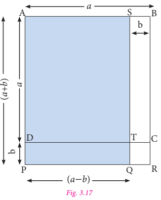
In the given figure, ye B equal to ye D equal to ye
So, area of square ye B C D equal to ye square
Also, S B equal to D P equal to b
Area of the rectangle S B C T equal to ye b
Similarly, area of the rectangle D P R C equal to ye b
Also, area of the square T Q R C equal to b square
Area of the rectangle D P Q T equal to ye multiplied by b minus b square
Now, ye S equal to P Q equal to (ye minus b) and ye P equal to S Q equal to (ye + b)
Hence, area of the rectangle ye P Q S (the shaded rectangle) equal to area of square ye B C D minus area of rectangle S T C B + area of rectangle D P Q T
Equal to ye square minus ye multiplied by b + (ye b minus b square)
Equal to ye square minus ye multiplied by b + ye multiplied by b minus b square
Equal to ye square minus b square
Hence, (ye + b) multiplied by (ye minus b) equal to ye square minus b square
Example 3.4
Simplify by using the identity (ye + b) multiplied by (ye minus b) equal to ye square minus b square
1. (3 x + 4) multiplied by (3 x minus 4)
2. 53 multiplied by 47
Solution
1. (3x + 4) multiplied by (3x minus 4)
Substitute ye equal to 3 x and b equal to 4 in the identity (ye + b) multiplied by (ye minus b) equal to ye square minus b square, we get
(3 x + 4) multiplied by (3 x minus 4) equal to (3 x) square minus 4 square
(3 square multiplied by x square ) minus 16 equal to 9 x square minus 16
2. 53 multiplied by 47 equal to (50 + 3) multiplied by (50 minus 3)
Take ye equal to 50 and b equal to 3
Substituting the value of ‘ye’ and ‘b’ in the identity (ye + b) multiplied by (ye minus b) equal to ye square minus b square, we get,
Equal to 50 square minus 3 square
Equal to 2500 minus 9 equal to 2491
Try this
Consider ye square shaped paddy field with side of 48 metre. ye pathway with uniform breadth is surrounded the square field and the length of the outer side is 52 metre. Can you find the area of the pathway by using identities?
ye factor of ye number is the number that exactly divides ye given number without leaving any remainder. For example, the factors of 4 are 1, 2 and 4; the factors of 12 are 1, 2, 3, 4, 6 and 12. And, the number can be expressed as product of its factors such as 12 equal to 1 multiplied by 12 (or) 2 multiplied by 6 (or) 3 multiplied by 4
In the same way, algebraic expressions also have factors that divide the expression exactly. Given an algebraic expression, the factors of that algebraic expression are two or more expressions whose product is the given expression. For example, x square y equal to x multiplied by x multiplied by y, hence the factors of the algebraic expression x square y are x, x and y.
Consider the algebraic expression x square minus 4
Now, x square minus 4 equal to x square minus 2 square equal to (x + 2) multiplied by (x minus 2) [because ye square minus b square equal to (ye + b) multiplied by (ye minus b)]
Therefore, (x + 2) and (x minus 2) are the factors of x square minus 4
Obviously, one is also a factor of x square minus 4
We know that, x square equal to x multiplied by x. Similarly, (x + 5) square equal to (x + 5) multiplied by (x + 5)
Thus, the factors of, (x + 5) square are (x + 5) and (x + 5)
The process of writing an algebraic expression as the product of its factors is called factorisation.
We shall learn more to factorise algebraic expressions, using the basic identities.
Example 3.5
Express the following algebraic expressions as the product of its factors:
1. ye b square
2. minus 3 p q cube
3. 12 em square n square p
Solution
1. ye b square equal to ye multiplied by b multiplied by b
2. minus 3 p q cube equal to minus 3 multiplied by p multiplied by q multiplied by q multiplied by q
3. 12 em square n square p equal to 4 multiplied by 3 multiplied by m multiplied by m multiplied by n multiplied by n multiplied by p equal to 2 multiply by 2 multiply by 3 multiply by m multiply by m multiply by n multiply by n multiply by p
Example 3.6
Factorise by using the identity: ye square minus b square equal to (ye + b) multiplied by (ye minus b)
1. ye square minus 1
2. 9 k square minus 25
3. 64 x square minus 81 y square
Solution
1. ye square minus 1 equal to ye square minus 1 square equal to (ye + 1) multiplied by (ye minus 1) [Since,1 square equal to 1 multiply by 1 equal to 1]
Therefore, the factors of a square minus 1 are (ye + 1) and (ye minus 1)
2. 9 k square minus 25 equal to (3 square multiplied by k square ) minus 5 square equal to (3 k) square minus 5 square [Since, ye power m multiplied by b power m equal to (ye multiplied by b) power m]
Equal to (3 k + 5) multiplied by (3 k minus 5) [Since, ye square minus b square equal to (ye + b) multiplied by (ye minus b)]
Therefore, the factors of 9 k square minus 25 are (3 k + 5) and (3 k minus 5).
3. 64 x square minus 81 y square equal to (8 square multiplied by x square ) minus (9 square multiplied by y square ) equal to (8 x) square minus (9 y) square
Equal to (8 x + 9 y) multiplied by (8 x minus 9 y)
Therefore, the factors of 64 x square minus 81 y square are (8 x + 9 y) and (8 x minus 9 y)
Example 3.7
Factorise 9 x square + 30 x y + 25 y square
Solution
9 x square + 30 multiplied by x multiplied by y + 25 y square equal to (3 square multiplied by x square ) + (2 multiplied by 3 multiplied by 5) multiplied by x y + (5 square multiplied by y square )
Equal to (3 x) square + 2 multiplied by (3 x) multiplied by (5 y) + (5 y) square
This expression is in the form of identity ye square+ 2 ye b + b square equal to (ye + b) square
Hence, (3 x) square + 2 multiplied by (3 x) multiplied by (5 y) + (5 y) square equal to (3 x + 5 y) square equal to (3 x + 5 y) multiplied by (3 x + 5 y)
Therefore, the factors of 9 x square + 30 x y + 25 y square are (3 x + 5 y) and (3 x + 5 y)
Think
Can we factorise the following expressions using any basic identities? Justify your answer.
1) x square + 5 x + 4
2) x square minus 5 x + 4
Example 3.8
Factorise 4 x square minus 4 multiplied by x multiplied by y + y square
Solution
4 x square minus 4 x y + y square equal to 2 square multiplied by x square minus (2 multiplied by 2) multiplied by x y + y square
Equal to (2 x) square minus 2 multiplied by (2 x) multiplied by y + y square
This expression is in the form of identity ye square minus 2 ye b + b square equal to (ye minus b) square
Say, 2 x equal to ye and y equal to b thus we have,
(2 x) square minus (2 multiplied by (2 x) multiplied by y + y square equal to (2 x minus y) square
Equal to (2 x minus y) multiplied by (2 x minus y)
Therefore, the factors of 4 x square minus 4 x y + y square are (2 x minus y) and (2 x minus y)
Example 3.9
Factorise x square minus 2 x y + y square minus z square
Solution
x square minus 2 x y + y square minus z square equal to (x square minus 2 multiplied by x multiplied by y + y square) minus z square equal to (x minus y) square minus z square [by identity 3]
Let, (x minus y) equal to ye and z equal to b
Therefore, (x minus y) square minus z square equal to ye square minus b square
We know that, ye square minus b square equal to (ye + b) multiplied by (ye minus b) [Identity 4]
Hence, x square minus 2 x y + y square minus z square equal to (x minus y + z) multiplied by (x minus y minus z)
Therefore, the factors of x square minus 2 x y + y square minus z square are (x minus y + z) and (x minus y minus z)
Activity
Here is an interesting number game to thrill your friends. Follow the steps.
Exercise 3.1
1. Fill in the blanks.
1) (p minus q) square equal to Dash
2) The product of (x + 5) and (x minus 5) is Dash
3) The factors of x square minus 4 x + 4 are Dash
4) Express 24 ye b c square as product of its factors is Dash
2. Say whether the following statements are True or False.
1) (7 x + 3) multiplied by (7 x minus 4) equal to 49 x square minus 7 x minus 12
2) (ye minus 1) square equal to ye square minus 1
3) (x square + y square ) multiplied by (y square + x square ) equal to (x square + y square ) whole square
4) 2 p is ye factor of 8 p q
3. Express the following as the product of its factors.
1) 24 ye b square c square
2) 36 x cube y square z
3) 56 em n square p square
4. Using the identity (x + ye) multiplied by (x + b) equal to x square + x multiplied by (ye + b) + ye b, find the following product.
1) (x + 3) multiplied by (x + 7)
2) (6 ye + 9) multiplied by (6 ye minus 5)
3) (4 x + 3 y) multiplied by (4 x + 5 y)
4) (8 + p q) multiplied by (p q + 7)
5. Expand the following squares, using suitable identities.
1) (2 x + 5) square
2) (b minus 7) square
3) (m n + 3 p) square
4) (x y z minus 1) square
6. Using the identity (ye + b) multiplied by (ye minus b) equal to ye square minus b square, find the following product,
1) (p + 2) multiplied by (p minus 2)
2) (1 + 3b) multiplied by (3 b minus 1)
3) (4 minus m n) multiplied by (m n + 4)
4) (6 x + 7 y) multiplied by (6 x minus 7 y)
7. Evaluate the following, using suitable identity.
1) 51 square
2) 103 square
3) 998 square
4) 47 square
5) 297 multiplied by 303
6) 990 multiplied by one thousand ten
7) 51 multiplied by 52
8. Simplify: (ye + b) square minus 4 ye b
9. Show that (m minus n) square + (m + n) square equal to 2 multiplied by (m square + n square)
10. If ye + b equal to 10 and ye b equal to 18 find the value of ye square + b square
11. Factorise the following algebraic expressions by using the identity ye square minus b square equal to (ye + b) multiplied by (ye minus b)
1) z square minus 16
2) 9 minus 4 y square
3) 25 ye square minus 49 b square
4) x power 4 minus y power 4
12. Factorise the following using suitable identity.
1) x square minus 8 x + 16
2) y square + 20 y + 100
3) 36 m square + 60 m + 25
4) 64 x square minus 112 x y + 49 y square
5) ye square + 6 ye b + 9 b square minus c square
Objective Type Questions
13. If ye + b equal to 5 and ye square + b square equal to 13, then ye b equal to ?
1) 12
2) 6
3) 5
4) 13
14. (5 + 20) multiplied by (minus 20 minus 5) equal to ?
1) minus 425
2) 375
3) minus 625
d) 0
15. The factors of x square minus 6 x + 9
1) (x minus 3) multiplied by (x minus 3)
2) (x minus 3) multiplied by (x + 3)
3) (x + 3) multiplied by (x + 3)
4) (x minus 6) multiplied by (x + 9)
16. The common factors of the algebraic expressions ye x square y, b x y square and c x y z is
1) x square y
2) x y square
3) x y z
4) x y
Earlier we have learnt to construct linear equations. Let us now study about Inequations.
As per the norms the minimum age limit to own ye driving licence is 18 years. Therefore, when Rajiv owns ye driving licence, we can say that he is at least 18 years of age.
Now, if Rajiv’s age is represented by x, then this statement can be written mathematically as x greater than or equal to 18, that is, we are not sure about his age, still we can say that his age is greater than or equal to 18 years.
Similarly, the statement ‘This jug can hold up to 5 litres of water’ can be written mathematically as x less than or equal to 5, where x represents the volume of water in the jug.
We know that, the sum of the measures of any two sides of ye triangle is greater than the measure of its third side. Thus, if the measures of the three sides are represented by ye, b and c units, then we may write this fat as ye + b greater than c, ye +c greater than b and b + c greater than ye.
When x not equal to 10, then either x greater than10 or x less than10. That is, if the value of the variable x is not 10, then the value of x will either be greater than 10 or be less than 10.
An algebraic statement that shows two algebraic expressions being unequal is known as an algebraic inequation.
In general, when two expressions are compared, one might be; less than (less than), less than or equal to, greater than, greater than or equal to the other.
In an inequation, the algebraic expressions are connected by one out of the four signs of inequalities, namely, greater than, greater than or equal to, less than and less than or equal to
Try these
Construct inequations for the following statements:
ye simple linear equation has at most one solution, but ye linear inequation may have many solutions.
To solve an inequation, it is necessary to know the set of values that the variable symbol can be substituted with. The collection of all such values of an inequation is known as solution of the inequation.
For example, the solution of the equation 3 x minus 3 equal to 12 is 5. (How?) Let us find the solution for the inequation 3 x minus 3 less than 12, where x is ye natural number. Note that, the solutions of this inequation are ‘natural numbers. Now,
Add 3 on both sides, we get 3 x minus 3 + 3 less than 12 + 3 implies 3 x less than 15
Divide by 3 on both sides, we get 3 x divided by 3 less than 15 divided by 3 implies x less than 5
Hence, x takes value which is less than 5 and x is ye natural number. Thus, the solution for this inequation are 1, 2, 3 and 4.
Note
When x is not restricted to ye natural number, the solution includes all values less than 5.
Rules to solve inequation
While solving an inequation, the rules for transposition in case of inequalities are the same as for equations.
Note
When both sides of an inequation are multiplied or divided by the same nonzero negative number, the sign of inequality is reversed. For example, consider 3 greater than12. Multiplying minus 1 on both sides, we get, 3 multiplied by (minus 1) less than 12 multiplied by (minus 1) minus 3 less than minus 12.
But, it is not true. Because, minus 3 is greater than minus 12
So, minus 3 greater than minus 12. Note that the sign of inequality is reversed.
To generalize, when x less than y is multiplied by minus 1 on both sides, we get, minus x greater than minus y.
Do you know?
Interchanging the expressions on both sides of an equation does not make any change in the equation. For example, x + 3 equal to 5 and 5 equal to x + 3 both are same.
But, if the expressions on both sides of an inequation are interchanged, the sign of inequality must be reversed.
For example, 30 greater than 20 is the same as 20 less than 30 and minus 18 less than minus 19 is the same as minus 9 greater than minus 18
Example 3.10
Solve: 2 x + 4 less than 18, where x is ye natural number.
Solution
2 x + 4 less than 18
2 x + 4 minus 4 less than 18 minus 4 [Subtracting 4 from both sides]
2 x less than 14 [Divide by 2 on both sides]
X less than 7
Since the solution belongs to natural numbers, that are less than 7, we take the values of the x as 1, 2, 3, 4, 5 and 6.
Therefore, the solutions are 1, 2, 3, 4, 5 and 6
Example 3.11
Solve: 5 minus 7 x greater than or equal to 33, where x is an integer.
Solution
5 minus 7 x greater than or equal to 33
5 minus 5 minus 7 x greater than or equal to 33 minus 5 [Subtracting 5 from both sides]
Minus 7 x greater than or equal to28
(minus 7 x) divided by (minus 7) greater than or equal to 28 divided by (minus 7) [Dividing both sides by minus7]
X less than or equal to minus 4 [Since, it is divided by ye negative number, the inequality is reversed]
Since, solution belongs to the set of integers, that are less than minus 4, we take the values of x as minus 4, minus 5, minus 6…
Therefore, the solutions are minus 4, minus 5, minus 6 so on
Think
Hameed saw a stranger in the street. He told his parent, The stranger’s age is between 40 to 45 years, and his height is between 160 to 170 centimetre
Convert the above verbal statement into an algebraic inequations by using x and y as variables of age and height.
Example 3.12
If one worker earns 200 rupee per day, how many workers can be employed within ye monthly of 3 Lakh rupee?
Solution
Let the number of workers be x
Then, the wages that x workers will earn per day equal to rupee 200 x
The wages that x workers will earn per month equal to rupee (200 x multiplied by 30) equal to rupee 6000 x
Given that, this amount cannot exceed three lakhs rupees
Otherwise, it can be written as 6000 x less than or equal to three lakhs
6000 x divided by 6000 less than or equal to three lakhs divided by 6000 [Divide by 6000 on both sides]
X less than or equal to 50
Thus, up to 50 workers can be employed on ye monthly budget of three lakhs rupees
The solutions of an inequation can be represented on the number line by marking the true values of solutions with different colour on the number line.
Look into the following inequations and its graphical representation on number line. Here, we consider the solution belongs to natural numbers. That is, each and every value of the solution is ye natural number.
1. When x less than3, the solution in natural numbers are 1 and 2. Its graph on number lines shown below:
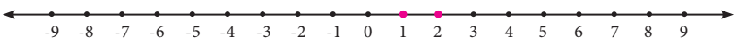
2. When x greater than or equal to3 the solutions are natural numbers 3, 4, 5 so on and its graph is as shown below:
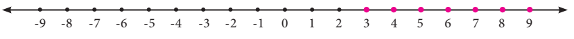
3. To mark the values represented by the inequation 2 less than or equal to x less than or equal to5, the solutions are set of natural numbers 2, 3, 4 and 5 and its graph is as given below:
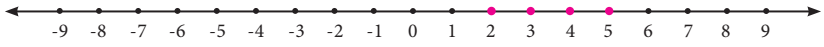
Example 3.13
Represent the solutions minus 8 less than 2x less than10 in ye number line, where x is ye natural number.
Solution
Minus 8 less than 2 x less than 10
(minus 8) divided by 2 less than 2 x divided by 2 less than 10 divided by 2 [Dividing the inequation by 2]
Minus 4 less than x less than 5
Since the solution belongs to the set of natural numbers, the solutions are 1, 2, 3 and 4. It’s graph on the number line is shown below:
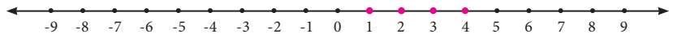
Note
Since the solution is restricted to natural numbers, minus 3, minus 2, minus 1 and 0 have not been marked as solutions.
Example 3.14
Represent the solutions of 3 x + 9 less than or equal to 12 in a number line, where x is an integer.
Solution
3 x + 9 less than or equal to 12
3 x divided by 3 + 9 divide by 3 less than or equal to 12 divided by 3 [Dividing the inequation by 3 on both sides]
x + 3 less than or equal to 4
x + 3 minus 3 less than or equal to 4 minus 3 [Subtracting 3 from both sides]
x less than or equal to 1
Since the solution belongs to integers, the solutions are 1, 0, minus 1, minus 2,so on. It’s graph on the number line is shown below:
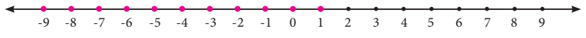
Example 3.15
Solve the inequation: minus 2 less than or equal to z + 3 less than or equal to 5, where z is an integer. Also, represent the solution, graphically.
Solution
Minus 2 less than or equal to z + 3 less than or equal to5
Minus 2 minus 3 less than or equal to z + 3 minus 3 less than or equal to 5 minus 3 [Subtracting minus 3 from the inequation]
Minus 5 less than or equal to z less than or equal to 2
Since the solution belongs to integers, the solutions are minus 5, minus 4, minus 3, minus 2, minus 1, 0, 1, and 2. It’s graph on the number line is shown below:
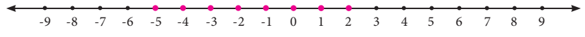
Example 3.16
Solve graphically:6 y minus 5 less than or equal to 2 y + 7, where y is an integer.
Solution
6 y minus 5 less than or equal to 2 y + 7
6 y minus 2 y minus 5 less than or equal to 2 y minus 2 y + 7 [Subtracting 2y from both sides]
4 y minus 5 less than or equal to 7
4 y minus 5 + 5 less than or equal to 7 + 5 [Adding 5 on both sides]
4 y less than or equal to 12
4 y divided by 4 less than or equal to 12 divided by 4 [Dividing by 4 on both sides]
Y less than or equal to 3
Since the solution belongs to integers, the solutions are 3, 2, 1, 0, minus1, minus 2,so on It’s graph on the number line is shown below:
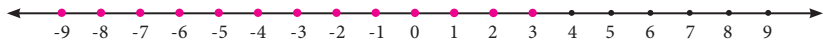
Exercise 3.2
1. Given that x greater than or equal to y. Fill in the blanks with suitable inequality signs.
1) y Dash x
2) x + 6 Dash y + 6
3) x square Dash x y
4) minus x y Dash minus y square
5) x minus y Dash 0
2. Say True or False
1) Linear inequation has almost one solution.
2) When x is an integer, the solutions for x less than or equal to 0 are minus 1, minus 2, so on
3) An inequation, minus 3 less than x less than minus 1, where x is an integer, cannot be represented in the number line.
4) x less than minus y can be rewritten as minus y less than x
3. Solve the following inequations.
1) x less than or equal to 7 Where x is ye natural number.
2) x minus 6 less than 1, where x is ye natural number.
3) 2 ye + 3 less than or equal to 13, where ye is ye whole number.
4) 6 x minus 7 greater than or equal to 35, where x is an integer.
5) 4 x minus 9 greater than minus 33, where x is ye negative integer.
4. Solve the following inequations and represent the solution on the number line:
1) k greater than minus 5, k is an integer.
2) minus 7 less than or equal to y, y is ye negative integer.
3) minus 4 less than or equal to x less than or equal to 8, x is ye natural number.
4) 3 em minus 5 less than or equal to 2 em + 1, em is an integer.
5. An artist can spend any amount between 80 rupee to 200 rupee on brushes. If cost of each brush is 5 rupee and there are 6 brushes in each packet, then how many packets of brush can the artist buy?
Objective Type Questions
6. The solutions of the inequation 3 less than or equal to p less than or equal to 6 are (where p is ye natural number)
1) 4, 5 and 6
2) 3, 4 and 5
3) 4 and 5
4) 3, 4, 5 and 6
7. The solution of the inequation 5 x + 5 less than or equal to15 are (where x is ye natural number)
1) 1 and 2
2) 0, 1 and 2
3) 2, 1, 0, minus 1, minus 2 etcetera
4) 1, 2, 3,etcetera
8. The cost of one pen is 8 rupee and it is available in ye sealed pack of 10 pens. If Swetha has only 500 rupee, how many packs of pens can she buy at the maximum?
1) 10
2) 5
3) 6
4) 8
9. The inequation that is represented on the number line as shown below is dash
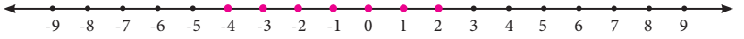
1) minus 4 less than x less than 0
2) minus 4 less than or equal to x less than or equal to 0
3) minus 4 less than x less than or equal to 0
4) minus 4 less than or equal to x less than 0
Exercise 3.3
Miscellaneous Practice Problems
1. Using identity, find the value of
1) (4.9) square
2) (100.1) square
3) (1.9) multiplied by (2.1)
2. Factorise: 4 x square minus 9 y square
3. Simplify using identities
1) (3p + q) multiplied by (3 p + r)
2) (3 p + q) multiplied by (3 p minus q)
4. Show that (x + 2 y) square minus (x minus 2 y) square equal to 8 x y
5. The pathway of ye square paddy field has 5 metre width and length of its side is 40 metre find the total area of its pathway. (Note: Use suitable identity)
Challenge Problems
6. If X equal to ye square minus 1 and Y equal to 1 minus b square then, X + Y and factorize the same.
7. Find the value of (x minus y) multiplied by (x + y) multiplied by (x square + y square)
8. Simplify. (5 x minus 3 y) square minus (5 x + 3 y) square
9. Simplify:
1) (ye + b) square minus (ye minus b) square
2) (ye + b) square + (ye minus b) square
10.ye Square lawn has ye 2 metre wide path surrounding it. If the area of the path is 136 metre square, find the area of lawn.
11. Solve the following inequalities.
1) 4 n + 7 greater than or equal to 3 n + 10, n is an integer.
2) 6 multiplied by (x + 6) greater than or equal to 5 multiplied by (x minus 3), x is a whole number.
3) minus 13 less than or equal to 5 x + 2 less than or equal to 32, x is an integer.
Summary
(x + ye) multiplied by (x + b) equal to x square + x multiplied by (ye + b) + ye b
(ye + b) square equal to ye square+ 2 ye b + b square
(ye minus b) square equal to ye square minus 2 ye b + b square and
(ye + b) multiplied by (ye minus b) equal to ye square minus b square
ICT Corner
Algebra
Expected outcome
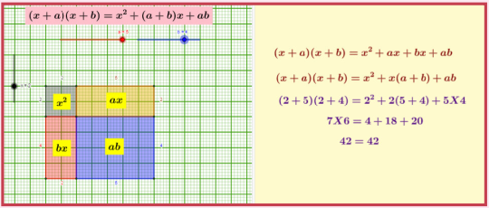
Step 1
Open the browser and type the URL link given below (or) scan the QR code. GeoGebra work sheet named (x + ye) multiplied by (x + b) will open. Drag the sliders to change x, ye, b values. Check the steps on right side.
Step 2
After completing click on Inequation in the left side. Move the slider below to change ‘ye’ value. Click on the check boxes to see respective inequations on the number line.
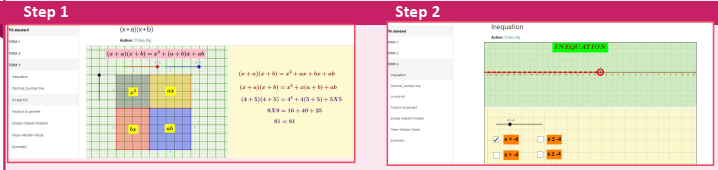
Browse in the link
(x + ye) multiplied by (x + b): https://www/geogebra/org/m/f4w7csup#material/nguv3ay
or Scan the QR Code.